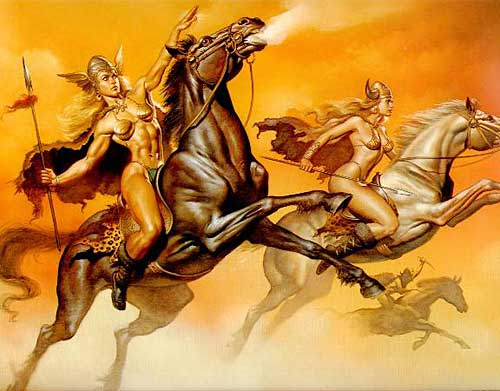

Mitología Vikinga
La mitología vikinga es una de las más interesantes que podemos encontrar. Los mitos, los dioses, el más allá y el origen del mundo dicen mucho de una civilización. De hecho, son la base que justifica sus leyes y comportamientos.
Cosmología de la mitología vikinga
Yggdrasil: cómo es el universo según los vikingos
La mitología vikinga describe un universo compuesto por varios reinos que se ubican a lo largo del Yggdrasil: un enorme fresno perenne. En sus raíces, ramas se encuentran los nueve reinos o mundos. Son los siguientes:
- Asgard. El mundo de los dioses o Æsir, que está gobernado por Odín.
- Midgard. El mundo de los hombres.
- Helheim. El reino de la muerte, gobernado por Hela, hija de Loki. Es un lugar frío, oscuro, donde nunca brilla el sol.
- Niflheim. El mundo de la oscuridad y las tinieblas, invadido por una niebla perpetua. Este gélido lugar es la morada del dragón Níðhöggr.
- Muspellheim. El reino del fuego, habitado por los Gigantes de Fuego liderados por Surt.
- Svartalfheim. El hogar de los elfos oscuros o Svartalfar.
- Alfheim. El mundo de los elfos luminosos o ljósálfar.
- Vanaheim. El mundo de los Vanir, el otro grupo de dioses vikingos.
- Jötunheim. El mundo de los gigantes, tanto de roca como de hielo.
Un puente de arco iris llamado Bifröst conectaba Asgard con Midgard. Este puente era utilizado por los dioses para llegar al mundo de los humanos y era vigilado por Heimdall.
En Yggdrasil también habitan criaturas mitológicas como la ardilla Ratatösk, el halcón Veðrfölnir, un águila sin nombre o los cuatro ciervos Dáinn, Dvalinn, Duneyrr y Duraþrór.
Cómo se creó el mundo
El reino de Midgard, que es donde viven los humanos, tiene un origen peculiar. Fue creado por Odín y sus hermanos Vili y Ve con el cadáver del gigante Ymir, a quien derrotaron en combate.
Los tres dioses utilizaron la piel para crear la tierra, la sangre y el sudor para formar los océanos, los huesos para crear las rocas y montañas, el vello para generar la vegetación y los dientes a modo de acantilados. Finalmente, asentaron el cráneo de Ymir a modo de cúpula celeste. Los sesos se desparramaron dando pie a las nubes. Odín y sus hermanos encargaron a cuatro enanos la sujeción del cráneo: Norðri, Suðri, Austri y Vestri; es decir, los cuatro puntos cardinales.
Como Midgard estaba oscuro, los dioses hicieron una incursión en el mundo de Muspelheim (reino del Fuego), donde robaron las centellas de la espada de Surt, el líder de los Gigantes de Fuego. Las dos centellas más grandes les sirvieron para crear el Sol y la Luna, y con el resto conformaron las estrellas.
El Sol y la Luna fueron colocados sobre dos carros de caballos que giran sin descanso sobre Midgard, turnándose para crear el día y la noche. Dos lobos llamados Sköll y Hati perseguían las carrozas para asegurarse de que no se detuvieran nunca. Tan solo las alcanzaban en ocasiones excepcionales, los eclipses.
Por último, los dioses añadieron las estaciones de invierno y verano. Ya estaba todo listo para recibir a los primeros humanos.
Ragnarök: el fin del mundo
Para los vikingos, el universo está condenado a una batalla final que supondrá su casi total destrucción. Se trata del Ragnarök (destino de los dioses), que enfrentará a dos bandos:
- Los Æsir, comandados por Odín.
- Los gigantes, liderados por Surt y Loki.
Una profecía dicta el inevitable transcurso de la contienda. Se sabe quién va a matar a quién, así como el resultado final. Tras una cruenta lucha que hará temblar todo Yggdrasil, Surt incendiará todo el universo. El sol, la Luna y las estrellas se apagarán, el fuego y unos vapores tóxicos lo arrasarán todo y, finalmente, la tierra se hundirá en el mar.
Pero después de este caos, el universo se regenerará. Una nueva tierra muy fértil emergerá del mar. Brillará un nuevo Sol. Los pocos dioses que sobrevivieron conformarán un nuevo panteón gobernado por Balder. Los dos únicos humanos que escaparon a la destrucción repoblarán Midgard. En este nuevo mundo no existirán la maldad ni la miseria, y además reinarán la paz y la armonía.
La vida más allá
Como casi todas las religiones, la vikinga confiaba en una vida después de la muerte. Ahora bien, ¡no todos corrían el mismo destino! Los mejores guerreros caídos en batalla entraban en el Valhalla para acompañar a los dioses. Se pasaban el día luchando, curándose rápidamente después para participar en fastuosos banquetes por la noche.
No todos los vikingos muertos en combate iban al Valhalla, sino sólo la mitad, los más destacados. Según la mitología vikinga, el otro 50% iba a parar al Fólkvangr, la residencia de la diosa Freya. De igual manera, pelean de dia y festejan de noche.
Por el contrario, aquellos que fallecían de causa natural iban al Helheim o Reino de Hel. Se trataba de un sitio oscuro y sombrío ubicado en las profundidades de Niflheim en el que las almas vagan ociosas sin nada que hacer.
Mucho peor destino aguardaba a los asesinos, los mentirosos y los viles en general. El Náströnd o Playa de los cadáveres es un paraje de Niflheim lleno de serpientes venenosas y vapores nocivos. El temible dragón Níðhöggr, además, se dedica a masticar a los condenados.
Seres sobrenaturales de la mitología vikinga
Los dioses: Æsir y Asynjur
El panteón que se veneraba en la mitología vikinga es el compuesto por los Æsir (dioses) y Asynjur (diosas). Es la generación más joven de dioses vikingos que remplazó a los Vanir, y está integrada por numerosas divinidades.
Algunos de los Æsir más importantes son:
.jpg)
- Odín, el dios principal.
- Thor, dios del trueno.
- Balder, deidad de la luz y de la verdad.
- Heimdall, el guardián de Bifröst.
- Tyr, dios de la guerra.
Por otra parte, las Asynjur más conocidas eran las siguientes:
- Frigg, esposa de Odín y diosa de la fertilidad.
- Sól, que era el Sol.
- Nótt, que era la noche.
Los Vanir
Los Vanir eran los dioses más antiguos, enfrentados con los Æsir en una guerra antes de firmar la paz. Ello no impedía que recibieran culto.
Algunos de los Vanir más adorados eran:
- Frey, divinidad de la lluvia.
- Freya, diosa del amor y la belleza.
- Njord, dios de la costa marina y la tierra fértil.
- Gerd, diosa del sexo y la fertilidad.
Los gigantes
Los gigantes son una raza importante en la mitología vikinga. Aunque son los adversarios naturales de los dioses (Æsir y Vanir), tenían trato con ellos e incluso se casaban. Suelen tener una apariencia espantosa y un carácter muy temperamental. Representan lo primitivo, el caos, por lo que su derrota a manos de los dioses simbolizaba el triunfo de la cultura sobre la naturaleza.
Los gigantes podían ser de dos tipos:
- Jotun. Son gigantes de roca o hielo que vivían en Jötunheim, donde tenían una fortaleza llamada Utgard. Su rey es Útgarða-Loki (no confundir con el dios Loki).
- Muspeli. Los gigantes de fuego residen en Muspelheim, gobernados por Surt.
El inefable Loki no era un dios, sino hijo de gigantes. Ello no impidió que se mezclara con los dioses, alcanzando un gran estatus hasta que asesinó a Balder. Tras este episodio fue capturado por los Æsir y atado a tres rocas. Allí permanecerá hasta que se libere para participar en el Ragnarök.
Las nornas
El destino de todos los hombres es inevitable para los vikingos, y pasa por las manos de las nornas. Estos espíritus femeninos tejen en su telar los acontecimientos, de modo que cada hilo es la vida de una persona. Los años que viva dependerán de la longitud de este hilo. El pasado, el presente y el futuro están entrelazados de tal forma que no se puede escapar a lo que está previsto.
Las nornas viven en las raíces de Yggdrasil, y de hecho riegan este árbol con agua del pozo de Udr. Muchas veces se cita a tres nornas en las sagas (Skuld, Urd y Verdandi), pero el número total de estas criaturas era superior.
El dragón Níðhöggr
Pocas criaturas tienen tanta popularidad en la mitologia vikinga como Níðhöggr. Se trata de un dragón o una serpiente que vive en el Nilfheim y que roe las raíces de Yggdrasil. Según se decía, estas raíces lo mantenían aparatado del resto del árbol. Además, el dragón devora los cadáveres de los condenados a Náströnd.
Las valquirias
Como las nornas, las valquirias son deidades menores. En este caso sirven a Odín, si bien su señora es Freya. Las valquirias o «selectoras de muertos» eligen a los guerreros más valerosos caídos en combate y los conducen al Valhalla.
Algunas de las valquirias más importantes son Brynhildr, Hilda y Sigdrífa. Se conoce el nombre de muchas de ellas.

Enanos
De los gusanos que devoraron el cadáver del gigante Ymir evolucionó la raza de los enanos. Estos seres vivían bajo la tierra, en el reino de Svartalfheim, y se dedicaban a la minería y la metalurgia. Forjaban armas y objetos muy poderosos para los dioses, como por ejemplo el martillo de Thor.
Elfos
Existían dos tipos de elfos, los luminosos y los oscuros. Mantenían una relación ambigua con los humanos, unas veces favoreciéndolos y otras veces perjudicándolos. Hay mitos que registran el cruce de especies entre elfos y humanos.
Los elfos de la luz eran bellos y poderosos, podríamos decir que semidioses. Vivían en bosques, cuevas y fuentes de agua. Su mundo era Alfheim.
Por el contrario, los elfos oscuros se parecían más a los enanos. Trabajan en la forja y su reino es Svartálfaheim.